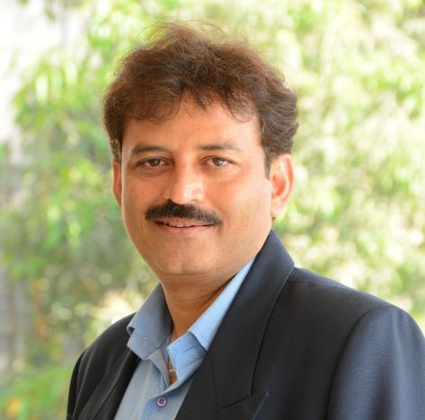

Dr. VasiAhmed Ebrahim Shaikh
Professor
Liquid Crystalline Polymers, Biopolymers, Microplastics, Water Purification, Polymer Chemistry

Professor
Liquid Crystalline Polymers, Biopolymers, Microplastics, Water Purification, Polymer Chemistry

Associate Professor
Dr. Kiran Kisanrao Kokate is an Associate Professor in Chemistry & acted as head for two years in the academic year 2021-22 & 2022-23. He has a teaching experience of 24 years. He has completed his PhD from Sant Gadge Baba Amravati…

Assistant Professor
Sanjay Bhagwat is currently working as an Assistant Professor in the Department of Chemistry at MIT World Peace University (MIT-WPU) in Pune, India. He completed his M.Sc. in Organic Chemistry from Fergusson College, Pune. He qualified…

Assistant Professor
Metal organic frameworks (MOFs) for H2 storage and CO2 capture, Molecular nanomagnets for quantum computing and nanodevices, Molecular switches with spin crossover complexes, Fluorescent sensors for the detection of volatile organic…

Assistant Professor
Polymer Science, Biopolymers, Biocatalyst, Biodiesel, Anticorrosive coating, Dendrimers, Green organic synthesis, Hydrogen generation, Computational Toxicology.

Assistant Professor
Dr. Vaishali Gaikwad has a ph.d in Inorganic Chemistry with a focus on metal complexes for the improvement of drugs function and a Master’s degree in Organic chemistry. She has qualified CSIR -NET in 2007. With 15 years of academic…


Assistant Professor
Conducting polymers, nanocomposites, protective coatings, biodegradable polymers, packaging applications etc.
Assistant Professor
Nanomaterial Synthesis, Plasmonics and Metamaterials, Nanophotonics, Single particle spectroscopy and microscopy